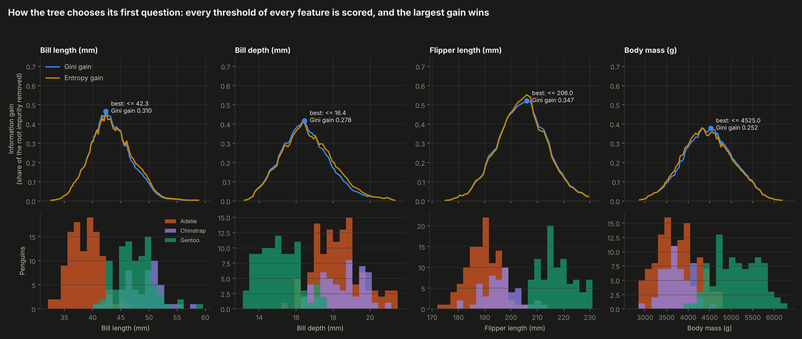
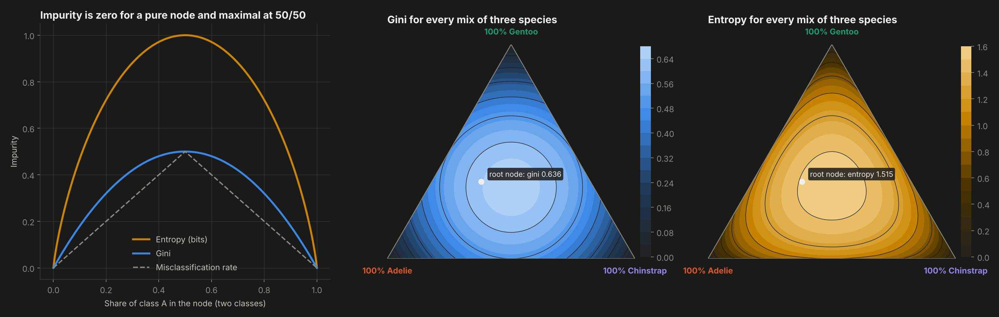
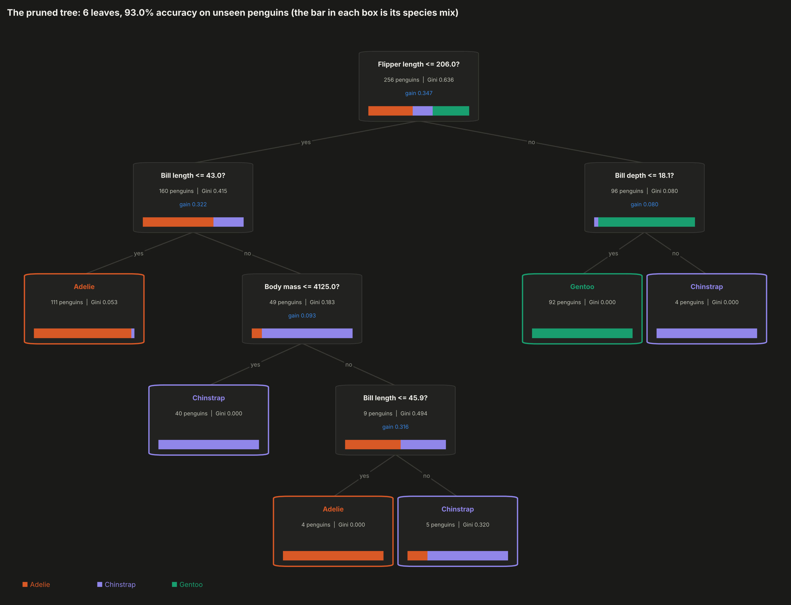
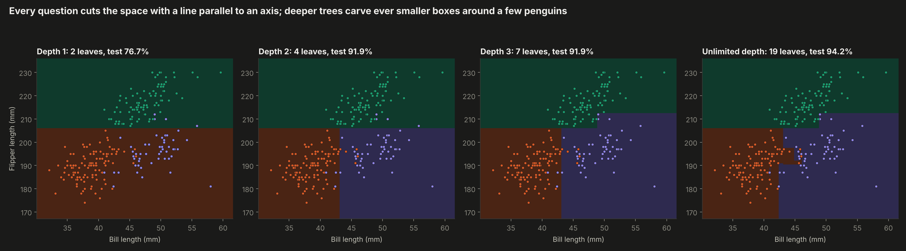
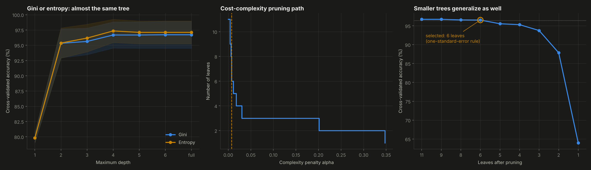
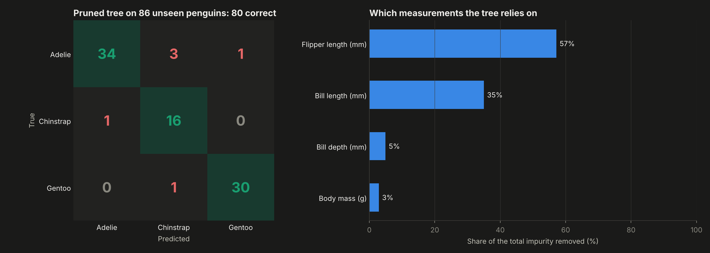

How a decision tree chooses each question. A CART classifier written in NumPy (Gini, entropy, information gain, cost-complexity pruning) identifies three penguin species from four body measurements and matches scikit-learn prediction for prediction.
Pick a measurement and move the threshold. The 256 training penguins are split in two; the gain shows how much purer the two groups are. The tree tries every option and keeps the best one.
Set the measurements of a penguin: the questions it answers light up and the leaf gives the species.
Drag to rotate. Each translucent plane is one question of the pruned tree, drawn only inside the region where it applies.
Gini and entropy gain for every possible threshold of every measurement.

What Gini and entropy measure, for two classes and for every mix of the three species.

The final pruned tree as learned by the code.

Trained on two measurements only, so the cuts can be drawn.

Cross-validation on the training set chooses how big the tree should be.

Errors and feature importance of the final tree.
